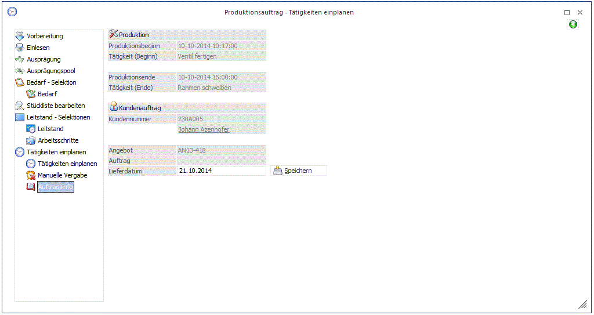

Der Bereich "Auftragsinfo" kann im Auswahlbaum nur angewählt werden, wenn es sich um einen Produktionsauftrag handelt, der aus WinLine FAKT stammt.

In dem Infobereich wird nach erfolgreicher Einplanung der Tätigkeiten der Produktionsbeginn und das Produktionsende des Produktionsauftrags angezeigt. Außerdem werden Informationen über den Kundenauftrag bzw. das Kundenangebot aus WinLine FAKT dargestellt.
Ø Lieferdatum
An dieser Stelle kann ein neues Lieferdatum für den Kundenauftrag bzw. für das Kundenangebot aus WinLine FAKT hinterlegt werden. Durch Drücken des Buttons wird diese Änderung im Auftrag gespeichert.
Hinweis
Im Bereich "Auftragsinfo" kann das Lieferdatum für Belege, bei denen Belegzeilen gesperrt sind, nur geändert werden, wenn der Benutzer ein Administrator ist.
Buttons

Ø Ok
Der Programmbereich wird verlassen und in den Bereich "Tätigkeiten einplanen" gewechselt.
Ø Ende
Der Programmbereich wird verlassen und in den Bereich "Tätigkeiten einplanen" gewechselt.